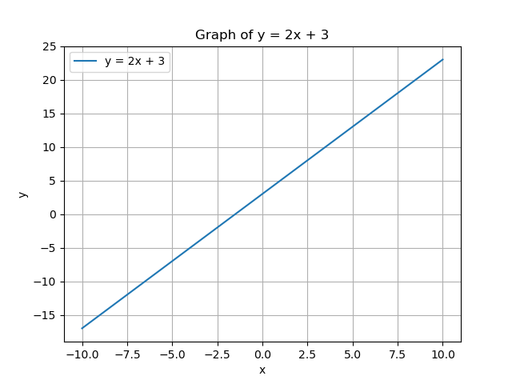
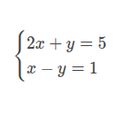
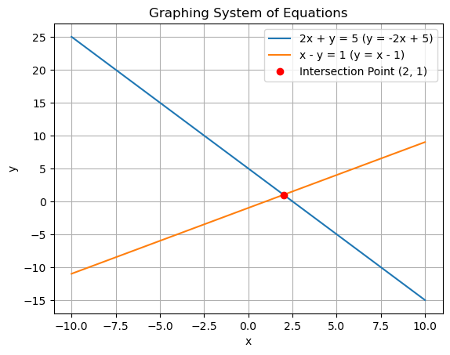
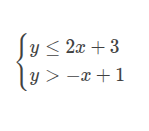
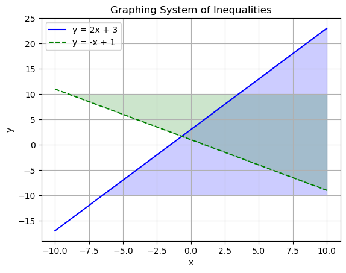
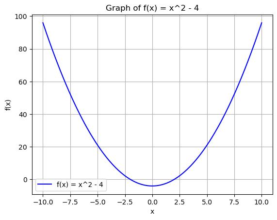
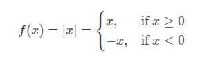
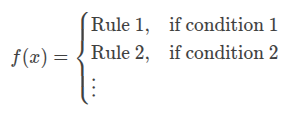
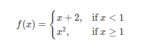
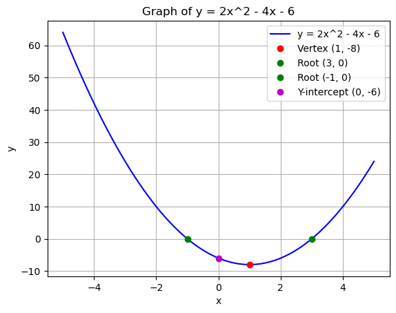

Algebra 1 Handbook
by Attila
First Edition
February 2025
Table of Contents
- Solving Equations & Inequalities
- Working with Units
- Linear Equations & Graphs
- Forms of Linear Equations
- Systems of Equations
- Inequalities (Systems & Graphs)
- Functions
- Sequences
- Absolute Value & Piecewise Functions
- Exponents & Radicals
- Exponential Growth & Decay
- Quadratics: Multiplying & Factoring
- Quadratic Functions & Equations
- Irrational Numbers
About This Handbook
This Algebra 1 Handbook is a simple, easy-to-use guide for learning the basics of algebra. It covers all the key topics, like solving equations, graphing lines, working with functions, and more. Each section includes clear explanations and examples to help you understand and practice. Whether you're a student, teacher, or just brushing up on algebra, this handbook is here to make learning straightforward and effective.
Let's get started!
1. Solving Equations & Inequalities
This is the foundation of algebra. You’ll learn how to solve for unknown variables in equations and inequalities.
Key Concepts:
- Equations: Mathematical statements where two expressions are equal (e.g., \(2x + 3 = 7\)).
- Inequalities: Statements that compare two expressions using symbols like \(<\), \(>\), \(\leq\), or \(\geq\) (e.g., \(3x - 5 < 10\)).
- Solving: Isolating the variable to find its value.
- Rules: Whatever you do to one side of the equation/inequality, you must do to the other side.
Steps to Solve:
- Simplify both sides of the equation/inequality.
- Use inverse operations (addition/subtraction, multiplication/division) to isolate the variable.
- For inequalities, remember to reverse the inequality sign if you multiply or divide by a negative number.
Example:
Solve \(2x + 5 = 11\):
- Subtract 5 from both sides: \(2x = 6\).
- Divide both sides by 2: \(x = 3\).
Solve \(3x - 4 \geq 8\):
- Add 4 to both sides: \(3x \geq 12\).
- Divide both sides by 3: \(x \geq 4\).
YouTube Video:
Here’s a great video to help you understand solving equations and inequalities:
Solving Equations & Inequalities by Khan Academy
2. Working with Units
Units are used to measure quantities like length, time, weight, and more. In algebra, you’ll often need to convert between units or solve problems involving units.
Key Concepts:
- Units: Standard measurements (e.g., meters, seconds, kilograms).
- Conversion: Changing from one unit to another (e.g., kilometers to meters).
- Dimensional Analysis: A method to convert units by multiplying by conversion factors.
- Consistency: Ensure all units in an equation are compatible.
Steps to Work with Units:
- Identify the units given and the units required.
- Use conversion factors (e.g., \(1 \text{ km} = 1000 \text{ m}\)) to convert between units.
- Cancel out units during calculations to ensure the final answer has the correct units.
Example:
Convert 5 kilometers to meters:
- Use the conversion factor: \(1 \text{ km} = 1000 \text{ m}\).
- Multiply: \(5 \text{ km} \times \frac{1000 \text{ m}}{1 \text{ km}} = 5000 \text{ m}\).
Solve a problem involving units:
A car travels at 60 km/h. How many meters does it travel in 5 seconds?
- Convert km/h to m/s: \(60 \text{ km/h} = \frac{60 \times 1000 \text{ m}}{3600 \text{ s}} = 16.67 \text{ m/s}\).
- Multiply by time: \(16.67 \text{ m/s} \times 5 \text{ s} = 83.35 \text{ m}\).
YouTube Video:
Here’s a helpful video to understand working with units and dimensional analysis:
Working with Units by Khan Academy
3. Linear Equations & Graphs
Linear equations describe relationships between variables that form straight lines when graphed. They are the foundation for understanding more complex functions.
Key Concepts:
- Linear Equation: An equation of the form \(y = mx + b\), where:
- \(m\) is the slope (steepness of the line).
- \(b\) is the y-intercept (where the line crosses the y-axis).
- Slope (\(m\)): Measures how much \(y\) changes for a unit change in \(x\). Formula: \(m = \frac{\text{rise}}{\text{run}} = \frac{y_2 - y_1}{x_2 - x_1}\).
- Graphing: Plotting points that satisfy the equation and connecting them to form a straight line.
- Intercepts:
- Y-intercept: The point where the line crosses the y-axis (\(x = 0\)).
- X-intercept: The point where the line crosses the x-axis (\(y = 0\)).
Steps to Graph a Linear Equation:
- Identify the slope (\(m\)) and y-intercept (\(b\)) from the equation \(y = mx + b\).
- Plot the y-intercept on the graph.
- Use the slope to find another point. For example, if \(m = 2\), go up 2 units and right 1 unit from the y-intercept.
- Draw a straight line through the points.
Example:
Graph the equation \(y = 2x + 3\):
- Slope (\(m\)) = 2, y-intercept (\(b\)) = 3.
- Plot the y-intercept at \((0, 3)\).
- From \((0, 3)\), use the slope \(2 = \frac{2}{1}\) to go up 2 units and right 1 unit to \((1, 5)\).
- Draw a line through \((0, 3)\) and \((1, 5)\).

Applications in AI/ML:
- Linear equations are used in linear regression, a basic ML algorithm for predicting continuous values.
- The slope and intercept help determine the relationship between input features and output predictions.
YouTube Video:
Here’s a great video to help you understand linear equations and graphing:
Linear Equations & Graphs by Khan Academy
Linear equations can be written in different forms, each useful for specific purposes. The three most common forms are:
Slope-Intercept Form:
- Equation: \(y = mx + b\)
- \(m\) = slope, \(b\) = y-intercept.
- Best for graphing and understanding the slope and intercept directly.
Standard Form:
- Equation: \(Ax + By = C\)
- \(A\), \(B\), and \(C\) are integers, and \(A\) and \(B\) are not both zero.
- Useful for solving systems of equations and analyzing intercepts.
Point-Slope Form:
- Equation: \(y - y_1 = m(x - x_1)\)
- \(m\) = slope, \((x_1, y_1)\) = a point on the line.
- Best for writing the equation of a line when you know the slope and a point.
Slope-Intercept to Standard Form:
- Start with \(y = mx + b\).
- Rearrange to \(mx - y = -b\).
- Multiply to eliminate fractions (if necessary).
Standard Form to Slope-Intercept Form:
- Start with \(Ax + By = C\).
- Solve for \(y\): \(y = -\frac{A}{B}x + \frac{C}{B}\).
Point-Slope to Slope-Intercept Form:
- Start with \(y - y_1 = m(x - x_1)\).
- Simplify to \(y = mx - mx_1 + y_1\).
Example:
Slope-Intercept Form: \(y = 2x + 3\).
- Slope (\(m\)) = 2, y-intercept (\(b\)) = 3.
Standard Form: Convert \(y = 2x + 3\) to standard form.
- Rearrange: \(2x - y = -3\).
Point-Slope Form: Write the equation of a line with slope \(2\) passing through \((1, 5)\).
- Use \(y - y_1 = m(x - x_1)\): \(y - 5 = 2(x - 1)\).
- Simplify: \(y = 2x - 2 + 5\) → \(y = 2x + 3\).
Applications in AI/ML:
- Different forms of linear equations are used in optimization problems, such as gradient descent, where you need to manipulate equations to find the best fit for data.
YouTube Video:
Here’s a helpful video to understand the different forms of linear equations:
Forms of Linear Equations by Khan Academy
5. Systems of Equations
A system of equations is a set of two or more equations with the same variables. The goal is to find the values of the variables that satisfy all the equations simultaneously.
Key Concepts:
Types of Systems:
- Consistent System: Has at least one solution.
- Inconsistent System: Has no solution (lines are parallel).
- Dependent System: Has infinitely many solutions (lines are the same).
Methods to Solve Systems:
- Graphing: Plot both equations and find the intersection point.
- Substitution: Solve one equation for one variable and substitute into the other equation.
- Elimination: Add or subtract equations to eliminate one variable.
Applications:
- Solving real-world problems involving multiple constraints.
- Used in AI/ML for optimization, such as in linear programming and support vector machines.
Example:
Solve the system:

Method 1: Graphin:

Method 2: Substitution:
- Solve the second equation for \(x\): \(x = y + 1\).
- Substitute \(x = y + 1\) into the first equation: \(2(y + 1) + y = 5\).
- Simplify: \(2y + 2 + y = 5\) → \(3y = 3\) → \(y = 1\).
- Substitute \(y = 1\) back into \(x = y + 1\): \(x = 2\).
- Solution: \((x, y) = (2, 1)\).
Method 3: Elimination:
- Add the two equations to eliminate \(y\):
\[
(2x + y) + (x - y) = 5 + 1 \implies 3x = 6 \implies x = 2.
\]
- Substitute \(x = 2\) into the second equation: \(2 - y = 1\) → \(y = 1\).
- Solution: \((x, y) = (2, 1)\).
Applications in AI/ML:
- Systems of equations are used in linear regression to find the best-fit line for data.
- They are also used in constraint optimization, where you need to maximize or minimize a function subject to constraints.
YouTube Video:
Here’s a great video to help you understand systems of equations:
Systems of Equations by Khan Academy
6. Inequalities (Systems & Graphs)
Inequalities describe relationships where one expression is not strictly equal to another but instead greater than, less than, or equal to within a range. Graphing inequalities helps visualize solutions, especially when dealing with systems of inequalities.
Key Concepts:
Linear Inequalities:
- Expressed as \(y > mx + b\), \(y < mx + b\), \(y \geq mx + b\), or \(y \leq mx + b\).
- The graph of a linear inequality is a half-plane (the region on one side of the boundary line).
Graphing Inequalities:
- Draw the boundary line (use a solid line for \(\leq\) or \(\geq\), dashed line for \(<\) or \(>\)).
- Shade the region that satisfies the inequality.
Systems of Inequalities:
- A set of two or more inequalities with the same variables.
- The solution is the intersection of the shaded regions (the area where all inequalities are satisfied).
Applications:
- Used in linear programming to optimize functions subject to constraints.
- Essential for understanding decision boundaries in machine learning models.
Example:
Graph the system of inequalities:

Steps:
Graph \(y = 2x + 3\):
- Draw a solid line (since it’s \(\leq\)).
- Shade below the line (since \(y \leq 2x + 3\)).
Graph \(y = -x + 1\):
- Draw a dashed line (since it’s \(>\)).
- Shade above the line (since \(y > -x + 1\)).
The solution is the overlapping shaded region.

Applications in AI/ML:
- Inequalities are used in support vector machines (SVMs) to define decision boundaries.
- They are also used in constraint-based optimization problems, such as resource allocation.
YouTube Video:
Here’s a helpful video to understand inequalities and their graphs:
Graphing Inequalities by Khan Academy
7. Functions
A function is a rule that assigns exactly one output to each input. In mathematical terms, a function \(f\) maps an input \(x\) to an output \(f(x)\).
Key Concepts:
Definition:
- A function is often written as \(y = f(x)\), where:
- \(x\) is the input (independent variable).
- \(y\) is the output (dependent variable).
- Every input \(x\) corresponds to exactly one output \(y\).
Domain and Range:
- Domain: The set of all possible input values (\(x\)) for which the function is defined.
- Range: The set of all possible output values (\(y\)) produced by the function.
Types of Functions:
- Linear Functions: \(f(x) = mx + b\) (straight lines).
- Quadratic Functions: \(f(x) = ax^2 + bx + c\) (parabolas).
- Exponential Functions: \(f(x) = a \cdot b^x\) (rapid growth/decay).
- Piecewise Functions: Defined by different rules for different intervals of \(x\).
Function Notation:
- \(f(x)\) is read as "f of x."
- Example: If \(f(x) = 2x + 3\), then \(f(2) = 2(2) + 3 = 7\).
Graphing Functions:
- Plot the input-output pairs \((x, f(x))\) on a coordinate plane.
- The shape of the graph depends on the type of function.
Example:
Consider the function \(f(x) = x^2 - 4\):
- Domain: All real numbers (\(x\) can be any value).
- Range: \(y \geq -4\) (since \(x^2\) is always non-negative).
- Graph: A parabola opening upward with vertex at \((0, -4)\).

Applications in AI/ML:
- Functions are used to model relationships between input features and output predictions (e.g., linear regression, neural networks).
- Activation functions in neural networks (e.g., ReLU, sigmoid) are critical for introducing non-linearity.
YouTube Video:
Here’s a great video to help you understand functions:
Functions by Khan Academy
8. Sequences
A sequence is a list of numbers arranged in a specific order, where each number is called a term. Sequences can be finite or infinite.
Key Concepts:
Types of Sequences:
- Arithmetic Sequence: Each term is obtained by adding a constant difference \(d\) to the previous term.
- Formula: \(a_n = a_1 + (n-1)d\), where:
- \(a_n\) = \(n\)-th term,
- \(a_1\) = first term,
- \(d\) = common difference.
- Geometric Sequence: Each term is obtained by multiplying the previous term by a constant ratio \(r\).
- Formula: \(a_n = a_1 \cdot r^{n-1}\), where:
- \(a_n\) = \(n\)-th term,
- \(a_1\) = first term,
- \(r\) = common ratio.
- Recursive Sequence: Each term is defined based on one or more previous terms.
- Example: Fibonacci sequence: \(Fn = F{n-1} + F_{n-2}\), with \(F_1 = 1\) and \(F_2 = 1\).
Sum of a Sequence:
- Arithmetic Series: The sum of the first \(n\) terms of an arithmetic sequence.
- Formula: \(S_n = \frac{n}{2}(a_1 + a_n)\).
- Geometric Series: The sum of the first \(n\) terms of a geometric sequence.
- Formula: \(S_n = a_1 \cdot \frac{1 - r^n}{1 - r}\) (for \(r \neq 1\)).
Applications:
- Sequences are used in time-series analysis (e.g., stock prices, weather data).
- They are also used in recursive algorithms and dynamic programming in computer science.
Example:
Arithmetic Sequence:
- First term \(a_1 = 3\), common difference \(d = 2\).
- The sequence: \(3, 5, 7, 9, 11, \dots\).
- 10th term: \(a_{10} = 3 + (10-1) \cdot 2 = 21\).
Geometric Sequence:
- First term \(a_1 = 2\), common ratio \(r = 3\).
- The sequence: \(2, 6, 18, 54, 162, \dots\).
- 5th term: \(a_5 = 2 \cdot 3^{5-1} = 162\).
Fibonacci Sequence:
- Defined recursively: \(Fn = F{n-1} + F_{n-2}\), with \(F_1 = 1\) and \(F_2 = 1\).
- The sequence: \(1, 1, 2, 3, 5, 8, 13, \dots\).
Applications in AI/ML:
- Sequences are used in recurrent neural networks (RNNs) for processing sequential data like text, speech, and time-series.
- They are also used in Markov chains for modeling probabilistic systems.
YouTube Video:
Here’s a helpful video to understand sequences:
Sequences by Khan Academy
9. Absolute Value & Piecewise Functions
Absolute Value Functions:
The absolute value of a number is its distance from zero on the number line, regardless of direction. The absolute value function is defined as:

Key Features:
Graph:
The graph of \(f(x) = |x|\) is a V-shape with its vertex at the origin \((0, 0)\).
The left side of the graph has a slope of \(-1\), and the right side has a slope of \(1\).
Transformations:
\(f(x) = |x - h| + k\) shifts the vertex to \((h, k)\).
\(f(x) = a|x - h| + k\) changes the slope to \(a\) (if \(a > 0\)) or \(-a\) (if \(a < 0\)).
Applications:
Used in optimization problems where the goal is to minimize absolute deviations (e.g., in robust regression).
Example:
Graph \(f(x) = |x - 2| + 3\):
- The vertex is at \((2, 3)\).
- The graph is a V-shape with slopes of \(1\) and \(-1\).
Piecewise Functions:
A piecewise function is defined by different rules for different intervals of the input \(x\). It is written as:

Key Features:
Graph:
- Each "piece" of the function is graphed separately over its defined interval.
- Pay attention to open and closed circles to indicate whether endpoints are included.
Applications:
- Used in modeling real-world scenarios where different rules apply in different situations.
- Common in AI/ML for defining activation functions (e.g., ReLU: \(f(x) = \max(0, x)\)).
Example:
Graph the piecewise function:

- For \(x < 1\), graph \(y = x + 2\) (a straight line).
- For \(x \geq 1\), graph \(y = x^2\) (a parabola).
- At \(x = 1\), \(f(1) = 1^2 = 1\). Use a closed circle at \((1, 1)\) for the parabola and an open circle at \((1, 3)\) for the line.
Applications in AI/ML:
- Absolute Value Functions: Used in loss functions like Mean Absolute Error (MAE) for regression tasks.
- Piecewise Functions: Used in activation functions like ReLU (\(f(x) = \max(0, x)\)) in neural networks.
YouTube Video:
Here’s a helpful video to understand absolute value and piecewise functions:
Absolute Value & Piecewise Functions by Khan Academy
10. Exponents & Radicals
Exponents:
An exponent represents repeated multiplication of a base number. For example, \(a^n\) means \(a\) multiplied by itself \(n\) times.
Key Rules of Exponents:
- Product Rule: \(a^m \cdot a^n = a^{m+n}\).
- Quotient Rule: \(\frac{a^m}{a^n} = a^{m-n}\).
- Power Rule: \((a^m)^n = a^{m \cdot n}\).
- Zero Exponent: \(a^0 = 1\) (for \(a \neq 0\)).
- Negative Exponent: \(a^{-n} = \frac{1}{a^n}\).
- Fractional Exponent: \(a^{m/n} = \sqrt[n]{a^m}\).
Example:
Simplify \(2^3 \cdot 2^4\):
- Using the product rule: \(2^3 \cdot 2^4 = 2^{3+4} = 2^7 = 128\).
Simplify \(\frac{5^6}{5^2}\):
- Using the quotient rule: \(\frac{5^6}{5^2} = 5^{6-2} = 5^4 = 625\).
Radicals:
A radical is the inverse operation of an exponent. The most common radical is the square root, denoted by \(\sqrt{}\).
Key Concepts:
- Square Root: \(\sqrt{a}\) is a number that, when multiplied by itself, gives \(a\).
- Cube Root: \(\sqrt[3]{a}\) is a number that, when multiplied by itself three times, gives \(a\).
Simplifying Radicals:
- Break down the radicand (the number inside the radical) into its prime factors.
- Example: \(\sqrt{50} = \sqrt{25 \cdot 2} = 5\sqrt{2}\).
Rationalizing the Denominator:
- Eliminate radicals from the denominator of a fraction.
- Example: \(\frac{1}{\sqrt{2}} = \frac{\sqrt{2}}{2}\).
Example:
Simplify \(\sqrt{72}\):
- Break down 72: \(72 = 36 \cdot 2 = 6^2 \cdot 2\).
- Simplify: \(\sqrt{72} = 6\sqrt{2}\).
Rationalize \(\frac{3}{\sqrt{5}}\):
- Multiply numerator and denominator by \(\sqrt{5}\): \(\frac{3}{\sqrt{5}} \cdot \frac{\sqrt{5}}{\sqrt{5}} = \frac{3\sqrt{5}}{5}\).
Applications in AI/ML:
- Exponents: Used in exponential functions for modeling growth/decay (e.g., learning rate decay in optimization algorithms).
- Radicals: Used in distance calculations (e.g., Euclidean distance in clustering algorithms like k-means).
YouTube Video:
Here’s a helpful video to understand exponents and radicals:
Exponents & Radicals by Khan Academy
11. Exponential Growth & Decay
Exponential Functions:
An exponential function is of the form:
\[
f(x) = a \cdot b^x
\]
where:
- \(a\) is the initial value (when \(x = 0\)),
- \(b\) is the base (growth factor if \(b > 1\), decay factor if \(0 < b < 1\)),
- \(x\) is the exponent (often representing time).
Key Concepts:
Exponential Growth:
- Occurs when \(b > 1\).
- The function grows rapidly as \(x\) increases.
- Examples: Population growth, compound interest.
Exponential Decay:
- Occurs when \(0 < b < 1\).
- The function decreases rapidly as \(x\) increases.
- Examples: Radioactive decay, cooling of an object.
The Number \(e\):
- A special mathematical constant (\(e \approx 2.718\)).
- Often used as the base in exponential functions: \(f(x) = a \cdot e^{kx}\).
- \(k\) determines the rate of growth (\(k > 0\)) or decay (\(k < 0\)).
Exponential Growth:
\[
f(x) = a \cdot (1 + r)^x
\]
- \(r\) = growth rate (as a decimal).
Exponential Decay:
\[
f(x) = a \cdot (1 - r)^x
\]
- \(r\) = decay rate (as a decimal).
Continuous Growth/Decay:
\[
f(x) = a \cdot e^{kx}
\]
- \(k\) = continuous growth rate (\(k > 0\) for growth, \(k < 0\) for decay).
Example:
Exponential Growth:
- A population of bacteria doubles every hour. If the initial population is 100, the population after \(t\) hours is:
\[
P(t) = 100 \cdot 2^t
\]
- After 3 hours: \(P(3) = 100 \cdot 2^3 = 800\).
Exponential Decay:
- A radioactive substance decays at a rate of 5% per year. If the initial amount is 200 grams, the amount after \(t\) years is:
\[
A(t) = 200 \cdot (1 - 0.05)^t = 200 \cdot 0.95^t
\]
- After 10 years: \(A(10) = 200 \cdot 0.95^{10} \approx 119.7\) grams.
Applications in AI/ML:
- Exponential Growth: Used in modeling user growth, viral content spread, and compound interest in finance.
- Exponential Decay: Used in learning rate scheduling for training neural networks (e.g., reducing the learning rate over time).
YouTube Video:
Here’s a helpful video to understand exponential growth and decay:
Exponential Growth & Decay by Khan Academy
12. Quadratics: Multiplying & Factoring
Quadratic Expressions:
A quadratic expression is a polynomial of degree 2, typically written in the form:
\( ax^2 + bx + c \)
where:
- \(a\), \(b\), and \(c\) are constants (\(a \neq 0\)),
- \(x\) is the variable.
Key Concepts:
Multiplying Binomials:
- Use the distributive property (also known as the FOIL method for binomials):
\[
(x + m)(x + n) = x^2 + (m + n)x + mn
\]
- Example: \((x + 2)(x + 3) = x^2 + 5x + 6\).
Factoring Quadratics:
- Factoring is the reverse of multiplying. It involves expressing a quadratic as a product of two binomials:
\[
x^2 + bx + c = (x + m)(x + n)
\]
where \(m\) and \(n\) are numbers such that:
- \(m + n = b\),
- \(m \cdot n = c\).
Special Cases:
- Difference of Squares: \(x^2 - y^2 = (x + y)(x - y)\).
- Perfect Square Trinomials: \(x^2 + 2xy + y^2 = (x + y)^2\).
Example:
Multiplying Binomials:
- Multiply \((x + 4)(x - 2)\):
\[
(x + 4)(x - 2) = x^2 - 2x + 4x - 8 = x^2 + 2x - 8
\]
Factoring Quadratics:
- Factor \(x^2 + 7x + 12\):
- Find two numbers that add to 7 and multiply to 12: \(3\) and \(4\).
- Factored form: \((x + 3)(x + 4)\).
Difference of Squares:
- Factor \(x^2 - 9\):
\[
x^2 - 9 = (x + 3)(x - 3)
\]
Applications in AI/ML:
- Quadratics: Used in optimization problems, such as finding the minimum or maximum of a function (e.g., in gradient descent).
- Factoring: Helps simplify equations and solve for roots, which is essential for understanding model behavior.
YouTube Video:
Here’s a helpful video to understand multiplying and factoring quadratics:
Quadratics: Multiplying & Factoring by Khan Academy
13. Quadratic Functions & Equations
Quadratic Functions:
A quadratic function is a polynomial function of degree 2, written in the standard form:
\[
f(x) = ax^2 + bx + c
\]
where:
- \(a\), \(b\), and \(c\) are constants (\(a \neq 0\)),
- \(x\) is the variable.
Key Features:
Graph:
- The graph of a quadratic function is a parabola.
- If \(a > 0\), the parabola opens upward (minimum point).
- If \(a < 0\), the parabola opens downward (maximum point).
Vertex:
- The vertex is the highest or lowest point on the parabola.
- The vertex \((h, k)\) can be found using:
\[
h = -\frac{b}{2a}, \quad k = f(h)
\]
Axis of Symmetry:
- The vertical line passing through the vertex: \(x = h\).
Roots (Zeros):
- The points where the parabola intersects the x-axis (\(f(x) = 0\)).
- Found by solving the quadratic equation \(ax^2 + bx + c = 0\).
Solving Quadratic Equations:
Quadratic equations are solved using methods like:
Factoring:
- Express the quadratic as \((x + m)(x + n) = 0\) and solve for \(x\).
Quadratic Formula:
\[
x = \frac{-b \pm \sqrt{b^2 - 4ac}}{2a}
\]
- The discriminant (\(D = b^2 - 4ac\)) determines the nature of the roots:
- \(D > 0\): Two distinct real roots.
- \(D = 0\): One real root (repeated).
- \(D < 0\): No real roots (complex roots).
Completing the Square:
- Rewrite the quadratic in the form \((x - h)^2 = k\) and solve for \(x\).
Example:
Solve \(2x^2 - 4x - 6 = 0\):
Using the Quadratic Formula:
- \(a = 2\), \(b = -4\), \(c = -6\).
- \(x = \frac{-(-4) \pm \sqrt{(-4)^2 - 4(2)(-6)}}{2(2)}\).
- \(x = \frac{4 \pm \sqrt{16 + 48}}{4} = \frac{4 \pm \sqrt{64}}{4}\).
- \(x = \frac{4 \pm 8}{4}\).
- Solutions: \(x = 3\) and \(x = -1\).
Graphing:
- The parabola opens upward (\(a = 2 > 0\)).
- Vertex: \(h = -\frac{-4}{2(2)} = 1\), \(k = 2(1)^2 - 4(1) - 6 = -8\).
- Vertex: \((1, -8)\).
- Roots: \(x = 3\) and \(x = -1\).

Applications in AI/ML:
- Quadratic Functions: Used in optimization problems, such as finding the minimum of a cost function.
- Quadratic Equations: Used in support vector machines (SVMs) for defining decision boundaries.
YouTube Video:
Here’s a helpful video to understand quadratic functions and equations:
Quadratic Functions & Equations by Khan Academy
14. Irrational Numbers
What Are Irrational Numbers?
Irrational numbers are real numbers that cannot be expressed as a fraction \(\frac{a}{b}\), where \(a\) and \(b\) are integers and \(b \neq 0\). They have non-terminating, non-repeating decimal expansions.
Key Properties:
Non-Terminating, Non-Repeating Decimals:
- Irrational numbers cannot be written as exact decimals. Their decimal expansions go on forever without repeating.
- Example: \(\pi = 3.1415926535...\)
Cannot Be Expressed as Fractions:
- Unlike rational numbers, irrational numbers cannot be expressed as \(\frac{a}{b}\).
Common Examples:
- \(\pi\) (pi): The ratio of a circle’s circumference to its diameter.
- \(\sqrt{2}\): The diagonal of a unit square.
- \(e\) (Euler’s number): The base of natural logarithms.
Operations with Irrational Numbers:
Addition/Subtraction:
- The sum or difference of a rational and an irrational number is irrational.
- Example: \(2 + \sqrt{3}\) is irrational.
Multiplication/Division:
- The product or quotient of a non-zero rational number and an irrational number is irrational.
- Example: \(2 \cdot \sqrt{5}\) is irrational.
Rationalizing:
- When irrational numbers appear in denominators, we rationalize them to simplify expressions.
- Example: \(\frac{1}{\sqrt{2}} = \frac{\sqrt{2}}{2}\).
Why Are Irrational Numbers Important?
Geometry:
- Irrational numbers appear in measurements involving circles (\(\pi\)), triangles (\(\sqrt{2}\)), and other shapes.
Optimization:
- In AI/ML, irrational numbers often appear in optimization problems, such as gradient descent, where step sizes or learning rates may involve irrational values.
Numerical Methods:
- Algorithms like Newton’s method for finding roots of equations often involve irrational numbers.
Example:
Proving \(\sqrt{2}\) is Irrational:
- Assume \(\sqrt{2}\) is rational, so \(\sqrt{2} = \frac{a}{b}\), where \(a\) and \(b\) are coprime integers.
- Square both sides: \(2 = \frac{a^2}{b^2}\) → \(a^2 = 2b^2\).
- This implies \(a^2\) is even, so \(a\) is even. Let \(a = 2k\).
- Substitute: \((2k)^2 = 2b^2\) → \(4k^2 = 2b^2\) → \(b^2 = 2k^2\).
- This implies \(b^2\) is even, so \(b\) is even.
- But if both \(a\) and \(b\) are even, they are not coprime, which contradicts our assumption.
- Therefore, \(\sqrt{2}\) is irrational.
Simplifying Expressions:
- Simplify \(\frac{3}{\sqrt{5}}\):
- Rationalize: \(\frac{3}{\sqrt{5}} \cdot \frac{\sqrt{5}}{\sqrt{5}} = \frac{3\sqrt{5}}{5}\).
Applications in AI/ML:
- Irrational Numbers: Used in algorithms involving geometry (e.g., calculating distances) and optimization (e.g., learning rates in gradient descent).
- Numerical Precision: Understanding irrational numbers is crucial for handling floating-point arithmetic in programming.
YouTube Video:
Here’s a helpful video to understand irrational numbers:
Irrational Numbers by Khan Academy